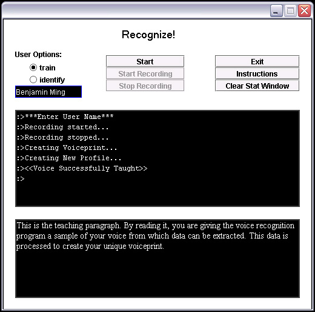

Voice Recognition System:
Voice recognition software is gaining use as a security device in many voice activated services, such as banking transactions over the phone and some voice-automated telephone dialers. The objective of this project is to record an end-users voice, extract user-identifying data from the recording, and either teach the voice to the system or determine the person to whom the voice belongs.
